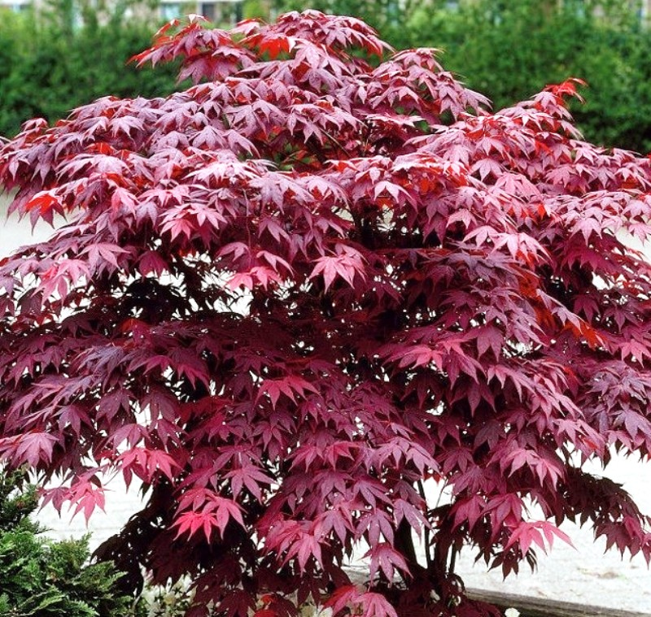
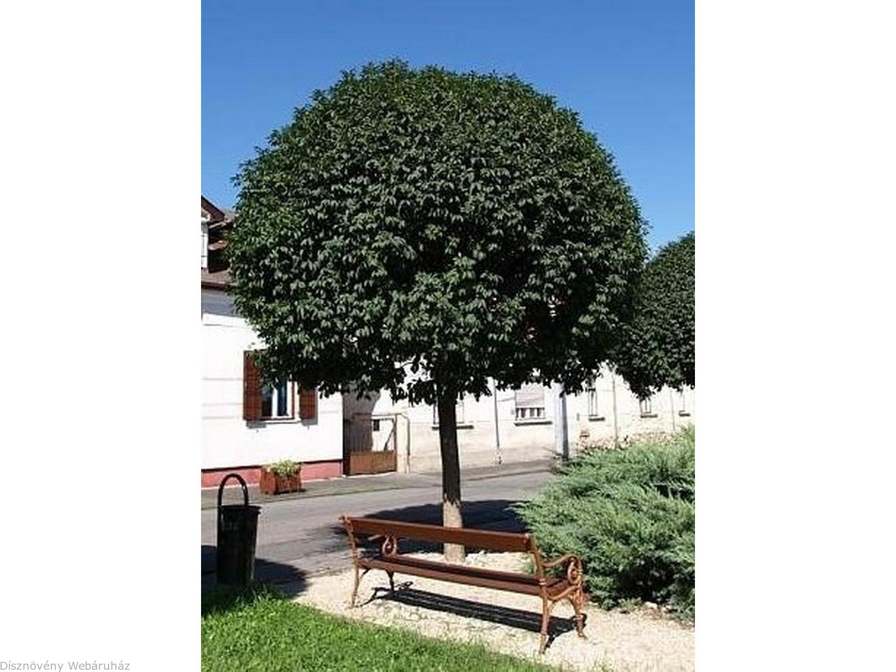
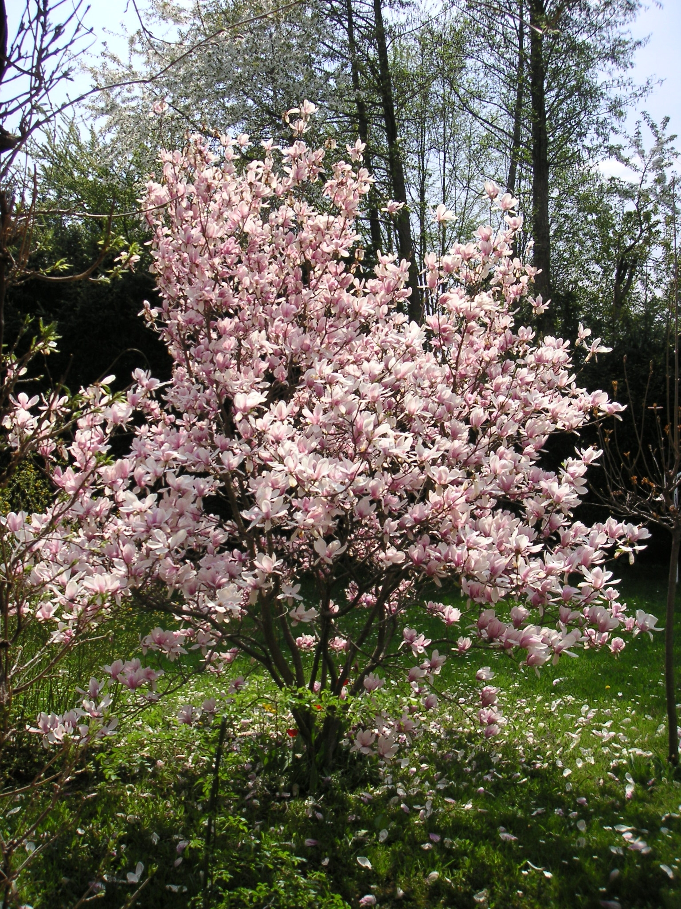
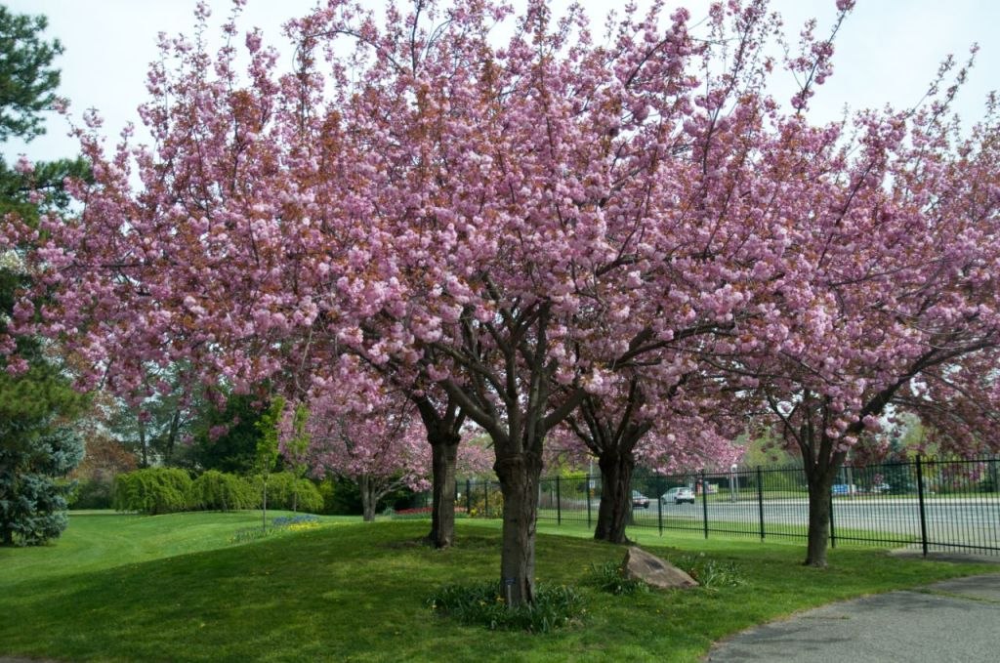
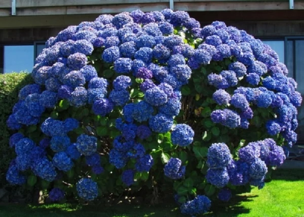
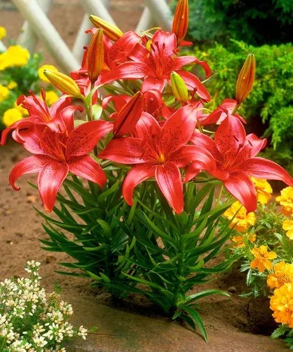
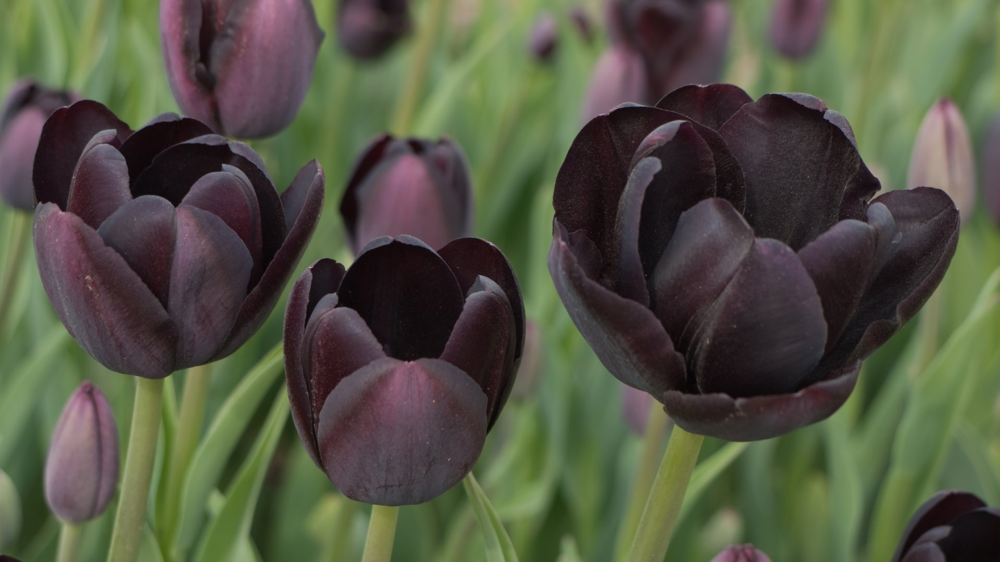

Eladó díszfáink és virágaink
Díszfák

Japán juhar
Színes, ernyős lombú díszfa árnyékos kertekbe.

Gömbkőris
Kompakt méretű, kiváló utcai és kerti fa.

Liliomfa
Tavasszal virágzó, különleges megjelenésű növény.

Vöröslevelű díszcseresznye
Látványos lombú, városi kertek kedvence.
Különleges virágok

Kék hortenzia
Színpompás virág, savas talajban mélykékké válik.

Tűzpiros liliom
Elegáns, magas szárú, különleges kerti dísz.

Fekete tulipán
Ritka, sötét színű, gyűjtők kedvence.